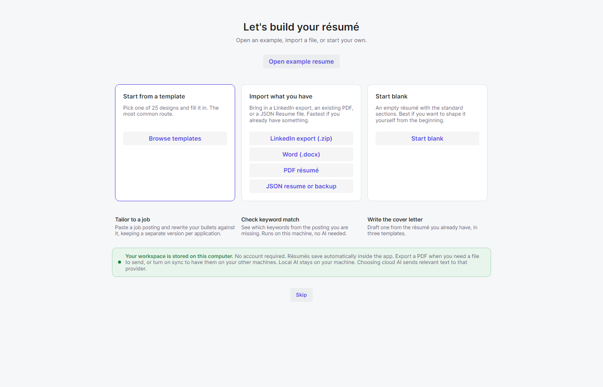
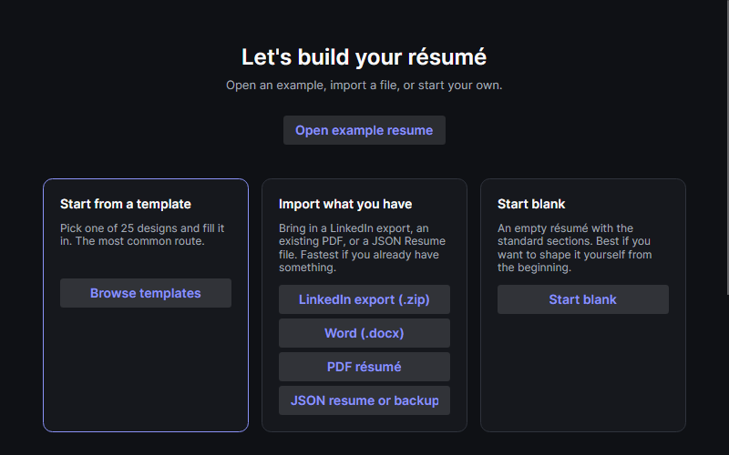

Current controls, rendered from the actual view with synthetic fixtures. Open example loads a separate editable synthetic document. Template, blank and import remain available. Word import joins JSON, LinkedIn and PDF. The complete surface scrolls at 800 by 500. Cancelled imports preserve the current workspace; success shows the editor with persistent review warnings. Privacy wording distinguishes local storage from explicitly chosen cloud AI.

